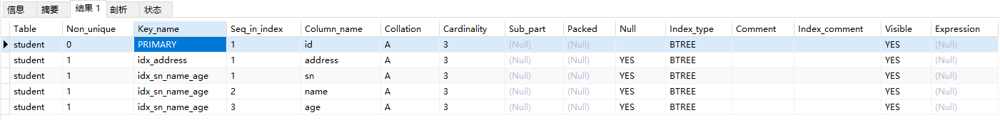
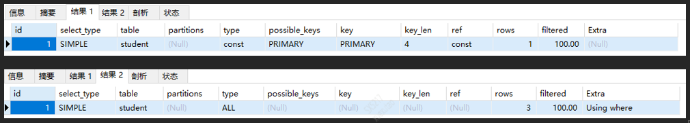
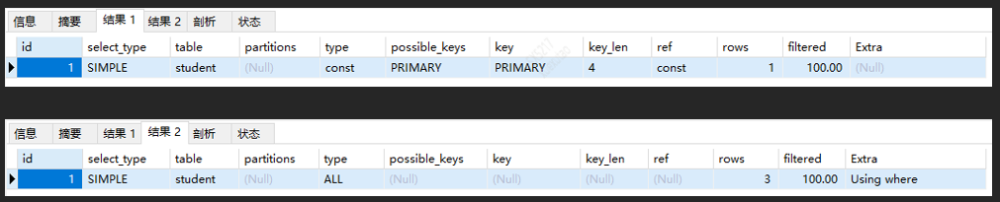
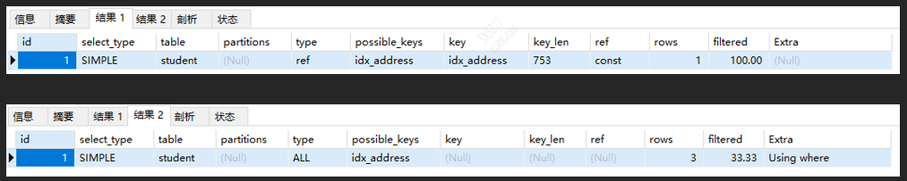
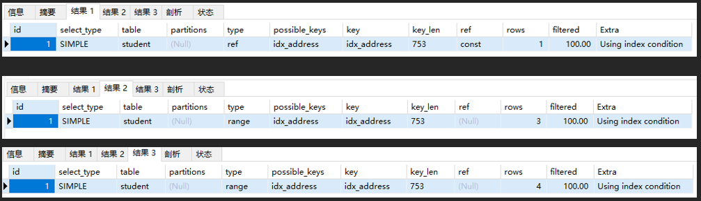

Mysql数据库
一、MySQL特殊命令
查找字段
从整个数据库中查找字段位于哪个表中（很有用）：
1 | select table_schema,table_name from information_schema.columns where column_name = '字段名' |
- 脏读：指一个事务读取到了另一个事务为提交保存的数据，之后此事务进行了回滚操作，从而导致第一个事务读取了一个不存在的脏数据。
- 不可重复读：在同一个事务中，同一个查询在不同的时间得到了不同的结果。例如事务在 T1 读取到了某一行数据，在 T2 时间重新读取这一行时候，这一行的数据已经发生修改，所以再次读取时得到了一个和 T1 查询时不同的结果。
- 幻读：同一个查询在不同时间得到了不同的结果，这就是事务中的幻读问题。例如，一个 SELECT 被执行了两次，但是第二次返回了第一次没有返回的一行，那么这一行就是一个“幻像”行。
二、MySQL 5.7 InnoDB 数据引擎
1 | drop table if exists student; |
创建完数据库之后
1 | show index from student; |

1：非最左匹配
以最左边的为起点字段查询可以使用联合索引，否则将不能使用联合索引。联合索引的字段顺序是 sn + name + age，我们假设它们的顺序是 A + B + C，以下联合索引的使用情况如下：
1 | explain select * from student where sn = "cn001" and name = "张三" and age = 15; -- key = idx_sn_name_age |
- A+B+C
- A+B
- A+C
- 而 B+C 却不能使用到联合索引，这就是最左匹配原则。
2：错误模糊查询
1 | explain select * from student where address like '张%'； -- key = idx_address |
模糊查询 like 的常见用法有 3 种：
- 模糊匹配后面任意字符：like ‘张%’
- 模糊匹配前面任意字符：like ‘%张’
- 模糊匹配前后任意字符：like ‘%张%’
只有第 1 种查询方式可以使用到索引
3：列运算
索引列使用了运算，那么索引也会失效
1 | EXPLAIN SELECT * FROM student WHERE id = 2; |

4：使用函数
如果使用任意 MySQL 提供的函数就会导致索引失效
1 | EXPLAIN SELECT * FROM student WHERE id = 2; |

5：类型转换
索引列存在类型转换，那么也不会走索引，比如 address 为字符串类型，而查询的时候设置了 int 类型的值就会导致索引失效
1 | explain select * from student where address = "cn001"; -- key = idx_address |
1 | explain select * from student where address = 123; -- key = NULL |

6：使用 is not null
（实验是可以走索引的）
1 | EXPLAIN SELECT * FROM student WHERE address IS NULL; |

簇聚索引
在 InnoDB 引擎中，每张表都会有一个特殊的索引“聚簇索引”，也被称之为聚集索引，它是用来存储行数据的。一般情况下，聚簇索引等同于主键索引，但这里有一个前提条件，那就是这张表需要有主键，只有有了主键，它才能有主键索引，有主键索引才能等于聚簇索引。
如果没有主键（索引），那么聚簇索引就不再是主键索引了
在 InnoDB 引擎下，聚簇索引的诞生过程如下：
- 当你为一张表创建主键时，也就是定义 PRIMARY KEY 时，此时这张表的聚簇索引就是主键索引。通常情况下，我们应该为一张表设置一个主键，如果没有合适的列作为主键列，我们可以定义一个自动递增的唯一列为主键，并且在插入数据时是自动填充此列。
- 然而，如果一张表中没有设置主键，那么 InnoDB 会使用第一个唯一索引（unique），且此唯一索引设置了非空约束（not null），我们就使用它作为聚簇索引。
- 如果一张表既没有主键索引，又没有符合条件的唯一索引，那么 InnoDB 会生成一个名为 GEN_CLUST_INDEX 的隐藏聚簇索引，这个隐藏的索引为 6 字节的长整数类型。